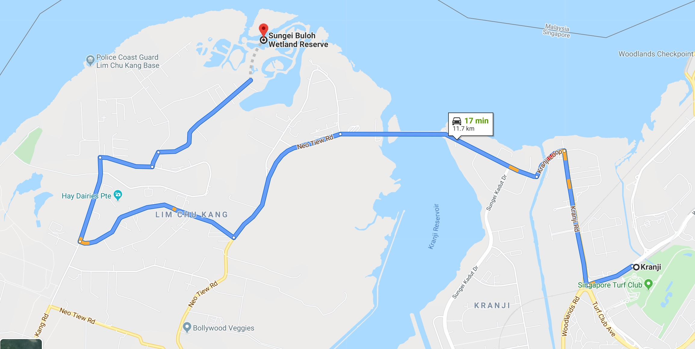

Sungei Buloh was first opened as a Nature Park in 1993. In 2002, 130 hectares were officially gazetted as a Nature Reserve and renamed Sungei Buloh Wetland Reserve to better reflect its status. In the same year, it was recognised as a site of international importance for migratory birds and awarded a certificate by Wetlands International, marking the reserve's formal entry into the East Asian Australasian Shorebird Site Network, which includes Australia's Kakadu National Park, China's Mai Po Inner Deep Bay and Japan's Yatsu Tidal Flats.
And in 2003, Sungei Buloh Wetland Reserve became Singapore's first ASEAN Heritage Park.
It is also what mudskippers, crabs, shellfish, water snakes, birds, spiders, monitor lizards and otters call home throughout the entire year.
History
Sungei Buloh Wetland Reserve, then known as Sungei Buloh Nature Park, was officially opened on 6 December 1993 by then Prime Minister Goh Chok Tong. comprising some 457 ha of mangrove swamp, was designated a forest reserve as early as 1890. It held this status until 1938, after which it was gradually developed for farming use. Ponds were dug for farming freshwater fish and the land was used to grow vegetables and cash crops such as rubber and coconut, as well as the rearing of ducks, chickens and pigs.

In 2002, it was the first wetlands reserve to be designated in Singapore and its global importance as a stop-over point for migratory birds was recognized by its international inclusion in the East Asian Australasian Shorebird Site Network. In 2003, it was also listed as an ASEAN Heritage Park.
Do's and Don'ts
Respect the Flora and Fauna
Leave nothing but footprints, take nothing but photographs. Parks are ultimately shared spaces and as a form of courtesy to other users, do not pluck flowers or fruits from trees.
Respect the eco-system. Please refrain from feeding native or stray animals, or releasing animals into our parks and nature reserves. Doing so may upset the fragile eco-system and cause more harm than good.
Do not smoke. Smoking is prohibited at covered spaces, shelters, toilets, playgrounds, fitness corners, carparks, as well as in areas where no-smoking signs have been installed
Keep noise levels low. Appreciate the sounds of nature and respect other park goers by keeping noise levels low. Only then can parks and the peaceful silence of nature be fully enjoyed and appreciated by everyone.

How to get there
Public Transport
By bus:
Mondays to Saturdays
Board SMRT Bus 925 from Kranji MRT Station. Alight at Kranji Reservoir Carpark B. Walk across the road to the Visitor Centre.
Sundays and Public Holidays
Board SMRT Bus 925 from Kranji MRT Station. The bus stops at the Wetland Centre entrance.
Note that SMRT Bus 925 operates only from Woodlands Interchange on Sundays and Public Holidays.
Kranji Express:
Kranji Express operates daily starting from 8.30 am and ending at 5.45 pm from Kranji MRT Station.
Bus schedule details can be found here.